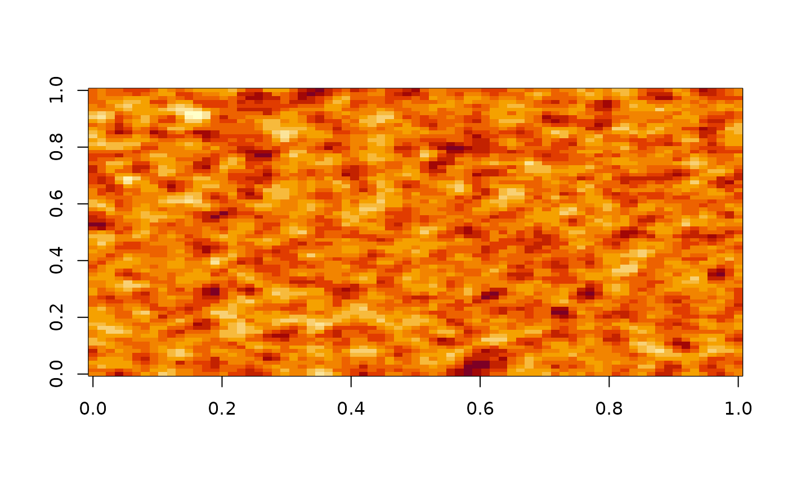
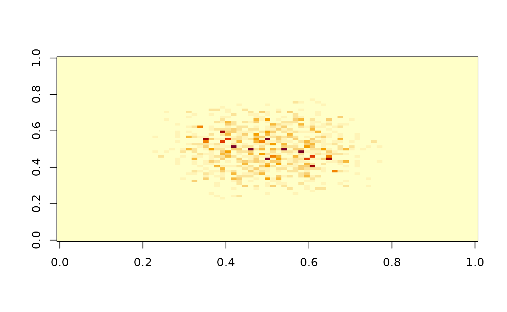
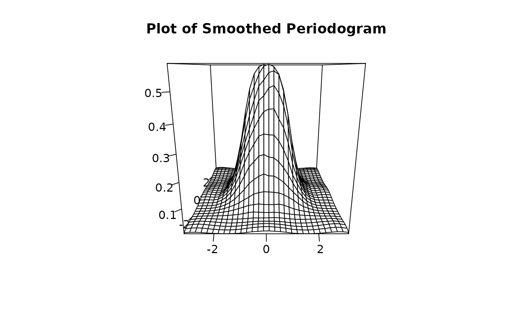
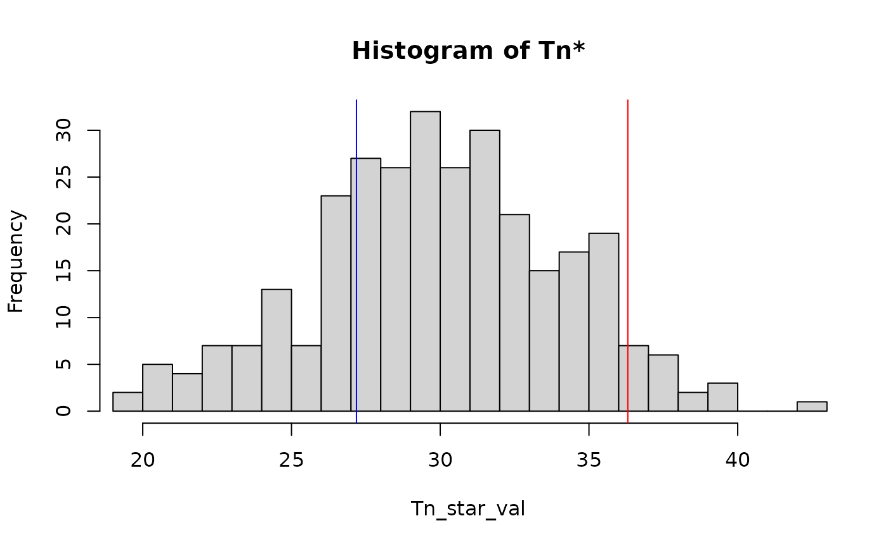
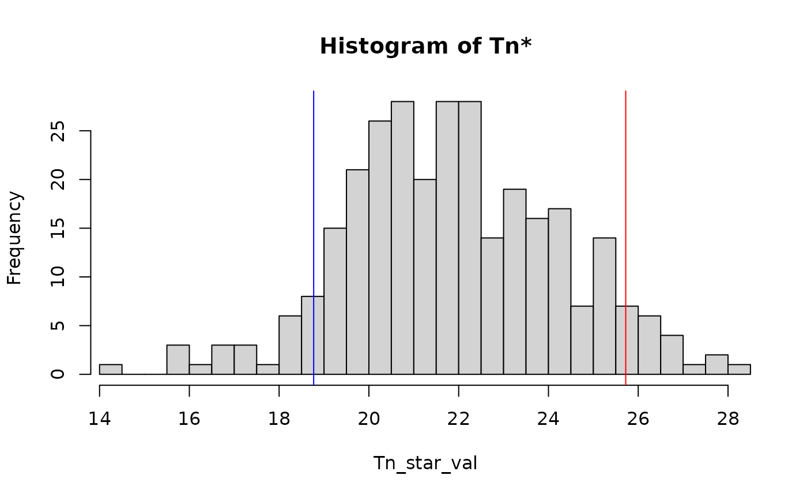
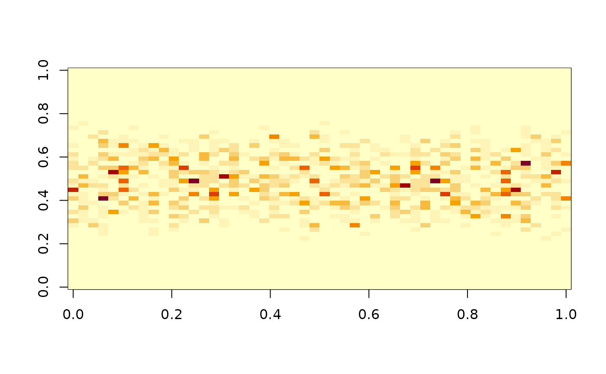
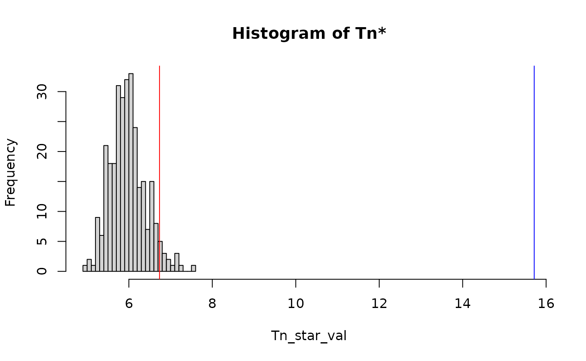
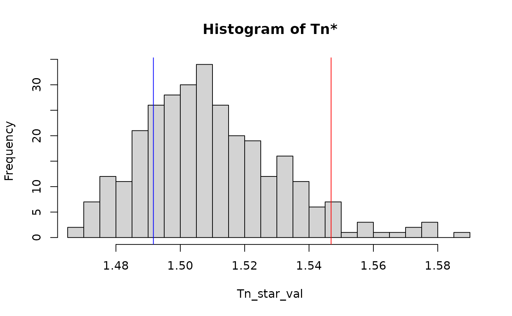

`rspsp`: Spatial Spectral Analysis in R
rspsp.Rmdrspsp contains tools for analyzing spatial lattice data.
Its main features include:
- Samplers for random data
- Diagnostic tools for assessing the spectrum
- Test statistics for modeling assumptions and comparing spectra
Generating Random Data
One of the easiest ways of fetching practice data for our tool is to generate new synthetic data. We offer two different spatial processes and one correlated extension:
To generate a sample, simply generate coefficients using one of our
utils (MA_coef_all(), MA_coef_row(),
MA_coef_col()) and then use the sampler. For details on the
usage of other samplers you can see Reference.:
# generate new coefficient matrix for
K0 <- MA_coef_all(.5)
x <- gridMA(75, 75, K0)
image(x)
Inspecting the Periodogram and Spectral Density
Before testing your sample you can inspect the spectral properties
with the I() function:

To inspect the spectral density estimate use I_smooth() we
also offer a plot generic for the returned object:

Testing for Equal Spectra
Test for equal spectra by either using by one of
test.periodo() or test.spectral().
y <- gridMA(75, 75, K0)
# apply periodogram based test Scaccia and Marin (2005)
summary(test.periodo(x, y, .05))
#> Periodogram Test for equality Hypothesis.
#> =========================================
#> alpha: 0.05
#>
#>
#> Results
#> -----------------------------------------
#> Tn: -1.444126
#> p: 0.9256483
#> Decision: Accepted H0
# apply randomized test after Jentsch and Pauly (2015)
res <- test.spectral(x, y, 300, .05)
summary(res)
#> Resampling Test for equality Hypothesis.
#> =========================================
#> Resampling iterations: 300
#> alpha: 0.05
#> used kernel-bandwith:
#> h1: 0.05624503 h2: 0.05624503
#>
#> Results
#> -----------------------------------------
#> Tn: 27.18329
#> p: 0.7666667
#> Decision: Accepted H0You can also visualize the distribution of the randomized samples
against the L_2 type test T_n (see test_spectral() for
more detail):
plot(res)
Testing for Isotropy
test.spectral() is applicable to other hypothesis for
modelling assumptions. If you want to test for weak isotropy simply set
hypothesis="isotropy"
# make sure to pass NULL for y
res <- test.spectral(x, NULL, 300, .05, hypothesis="isotropy")
summary(res)
#> Resampling Test for isotropy Hypothesis.
#> =========================================
#> Resampling iterations: 300
#> alpha: 0.05
#> used kernel-bandwith:
#> h1: 0.05624503 h2: 0.05624503
#>
#> Results
#> -----------------------------------------
#> Tn: 18.77008
#> p: 0.9266667
#> Decision: Accepted H0
plot(res) If we would now consider a non-isotropic process:
x <- gridMA(50, 50, MA_coef_row(.7))
image(I(x)) …the test will reject:
res <- test.spectral(x, NULL, 300, .05, hypothesis="isotropy")
summary(res)
#> Resampling Test for isotropy Hypothesis.
#> =========================================
#> Resampling iterations: 300
#> alpha: 0.05
#> used kernel-bandwith:
#> h1: 0.07369985 h2: 0.07369985
#>
#> Results
#> -----------------------------------------
#> Tn: 15.71547
#> p: 0
#> Decision: Rejected H0
plot(res)
you can also test for weak stationarity using
hypothesis=stationary
h <- length(x)^(-.2)
res <- test.spectral(x, NULL, 300, .05, hypothesis="stationary", h1=h, h2=h)
summary(res)
#> Resampling Test for stationary Hypothesis.
#> =========================================
#> Resampling iterations: 300
#> alpha: 0.05
#> used kernel-bandwith:
#> h1: 0.2091279 h2: 0.2091279
#>
#> Results
#> -----------------------------------------
#> Tn: 1.491642
#> p: 0.8066667
#> Decision: Accepted H0
plot(res)